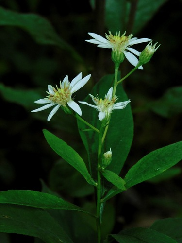

White Admiral
Limenitis arthemis butterfly / moth
Black butterfly with broad white wing-bands. Caterpillars feed on aspen, willow, and birch.
14 documented plant relationships.
sips nectar at
Bee Balm (Wild Bergamot)Monarda fistulosa Douglas Goldman, some rights reserved (CC BY-SA), uploaded by Douglas Goldman") FireweedChamaenerion angustifolium
FireweedChamaenerion angustifolium Douglas Goldman, some rights reserved (CC BY-SA), uploaded by Douglas Goldman") Flat-topped GoldenrodEuthamia graminifolia
Flat-topped GoldenrodEuthamia graminifolia Joe-Pye WeedEutrochium maculatum
Joe-Pye WeedEutrochium maculatum Sarah Johnson, some rights reserved (CC BY), uploaded by Sarah Johnson") MeadowsweetSpiraea alba
MeadowsweetSpiraea alba gwt2102, some rights reserved (CC BY)") Spreading DogbaneApocynum androsaemifolium
Spreading DogbaneApocynum androsaemifolium tzeducation, some rights reserved (CC BY), uploaded by tzeducation") Wild BergamotMonarda fistulosa
Wild BergamotMonarda fistulosa Douglas Goldman, some rights reserved (CC BY-SA), uploaded by Douglas Goldman") YarrowAchillea millefolium
YarrowAchillea millefolium
FireweedChamaenerion angustifoliumFlat-topped GoldenrodEuthamia graminifolia
Flat-topped White AsterDoellingeria umbellataJoe-Pye WeedEutrochium maculatumMeadowsweetSpiraea albaSpreading DogbaneApocynum androsaemifoliumWild BergamotMonarda fistulosaYarrowAchillea millefolium Douglas Goldman, some rights reserved (CC BY-SA), uploaded by Douglas Goldman")

 Harvey Barrison, some rights reserved (CC BY-SA)")